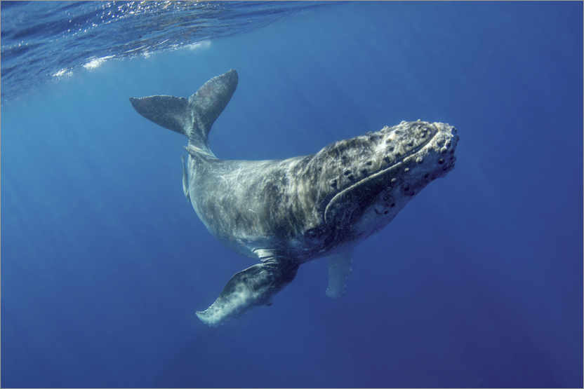
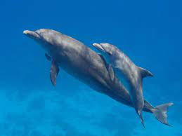
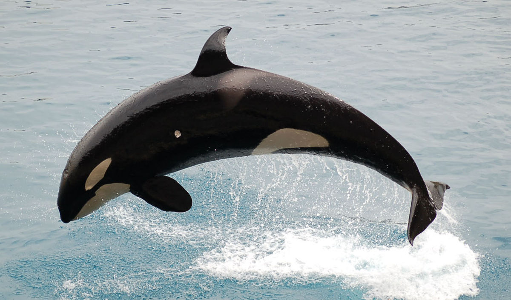

Especies y hábitats: delfín de río. El delfín del río Amazonas, también conocido como delfín rosado o boto, vive en agua dulce en las cuencas de los ríos Amazonas y Orinoco en Bolivia, Brasil, Colombia, Ecuador, Guyana, Perú y Venezuela.
Respecto a su hábitat, el delfín rosado del amazonas es fácilmente encontrado en los principales ríos y caídas de agua rápidas de la zona; su capacidad de adaptación les permite vivir incluso en bosques inundados en la época de lluvia que den lugar a pequeñas formaciones de lagos conectadas con los ríos.
Durante la temporada de sequía, se les ve ocupar los grandes cauces de ríos, mientras que en el invierno se mueven a merced en busca de sus presas alcanzando grandes territorios de la selva y las planicies inundadas.
Todos los platanistoideos presentan largos y finos hocicos. Su vista es muy limitada (en algunas especies, inexistentes), por lo que el sentido de la ecolocalización les resulta indispensable a la hora de alimentarse y nadar. Su aleta dorsal es poco desarrollada.
Tal vez una de las características más llamativas es, al igual que en la familia Monodontidae, la capacidad de mover el cuello, a diferencia de los delfines oceánicos, que poseen las vértebras cervicales fusionadas.
Los delfines de río están entre los cetáceos más amenazados, a causa de la pérdida de su hábitat, la caza por humanos y su baja población intrínseca. Los delfines de río tienen visión muy limitada, e incluso a algunas especies puede considerárselas ciegas, lo que acentúa la posibilidad de encuentros infortunados con humanos u objetos peligrosos, incluyendo redes de pesca.
Algunos delfines pueden utilizar ambos hábitats; el tucuxi por ejemplo, incluido taxonómicamente en la familia Delphinidae, vive igualmente en ríos u océanos.
|
|
|
|  |
 |
 |